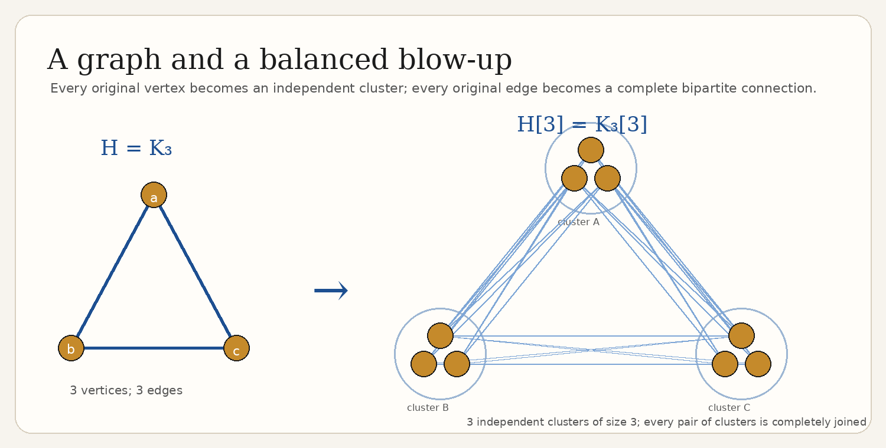
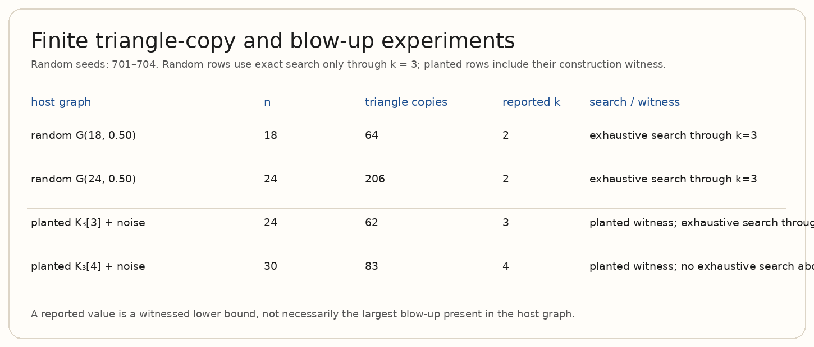
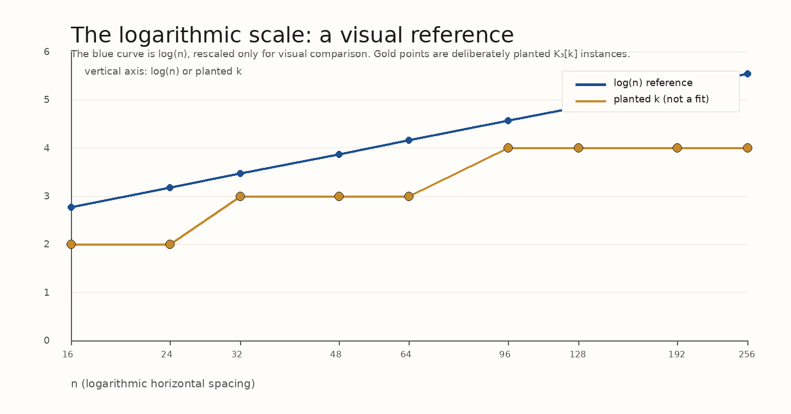
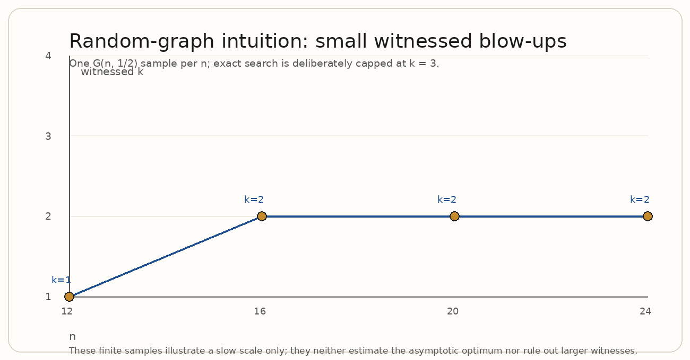

A computational introduction to a structural principle: sufficiently many copies of one fixed graph force a large, coordinated multipartite pattern. The calculations and pictures below are finite illustrations—not a verification of the asymptotic theorem.
Let $H$ be a fixed graph on $h$ vertices and let $gamma>0$. For all sufficiently large $n$, if an $n$-vertex graph $G$ contains at least $gamma n^h$ copies of $H$, then $G$ contains a balanced blow-up $H[k]$ with
where $c_H(\gamma)>0$ depends only on $H$ and $gamma$. Here $n=|V(G)|$, $h=|V(H)|$, and $k$ is the common cluster size. The statement is asymptotic: “sufficiently large” may depend on $H$ and $gamma$. This page does not assign a numerical value to $c_H(\gamma)$; its optimal dependence on $gamma$ and $H$ is not known in general.
Replace each vertex $v\in V(H)$ by an independent cluster $V_v$ of $k$ vertices. For each edge $uv\in E(H)$, join every vertex of $V_u$ to every vertex of $V_v$. For each non-edge of $H$, add no corresponding complete bipartite connection. Thus $H[k]$ has $hk$ vertices, arranged in $h$ equally sized parts.

Many triangles can be scattered throughout a graph. A $K_3[k]$, by contrast, is coherent: three vertex groups support all $k^2$ edges across every pair of groups. Nikiforov's conclusion turns a global abundance condition into this local but highly organized configuration.
The logarithm is central. In general it cannot be replaced by a substantially larger order: random graphs provide the guiding intuition that coordinated complete bipartite connections become rare quickly as $k$ grows. That intuition is not itself a proof of sharpness.
The animation reveals the three complete bipartite joins one at a time. It is a literal construction of the small example, rather than a simulation of the theorem.
For $H=K_3$, the script generated fixed-seed random host graphs and two graphs with a deliberately planted balanced blow-up plus background noise. It counts triangles exactly. The search enumerates independent clusters exactly only through $k=3$ for $n\le24$; the $K_3[4]$ row is certified by its construction. A failure to find $k=3$ is not evidence that no larger configuration exists outside this search scope.

| host graph | $n$ | triangle copies | reported $k$ | interpretation |
|---|---|---|---|---|
| random $G(18,1/2)$ | 18 | 64 | 2 | exact search through $k=3$ |
| random $G(24,1/2)$ | 24 | 206 | 2 | exact search through $k=3$ |
| planted $K_3[3]$ + noise | 24 | 62 | 3 | construction supplies a witness |
| planted $K_3[4]$ + noise | 30 | 83 | 4 | no exhaustive search above $n=24$ |
The blue curve is the reference function $\log n$; it is rescaled only to share a drawing with deliberately planted examples. The gold points are not measured estimates of $c_H(\gamma)$ and are not a fitted theorem curve. They simply make the slowly growing logarithmic scale visually tangible.

In a random graph, a candidate $K_3[k]$ asks for all cross-cluster edges among three groups, while also asking for independent clusters in the exact construction. As $k$ increases, these joint requirements become increasingly restrictive. This gives intuition for why a logarithmic scale is natural and why one should not expect a generally much larger guaranteed blow-up.

All experiments are finite and intentionally small. Exhaustively testing three disjoint independent clusters already grows rapidly with $n$ and $k$. The random graph values are single reproducible samples (seeds are recorded in the generated source/output), not averages. No heuristic failure is interpreted as nonexistence, and no simulation is presented as a proof of the asymptotic theorem.
Nikiforov's theorem says that copy abundance forces more than repetition: it forces reusable architecture. The computational examples make the architecture concrete, while the logarithmic plot and random-graph samples explain why the guaranteed scale is both meaningful and, in general, the right order of magnitude.